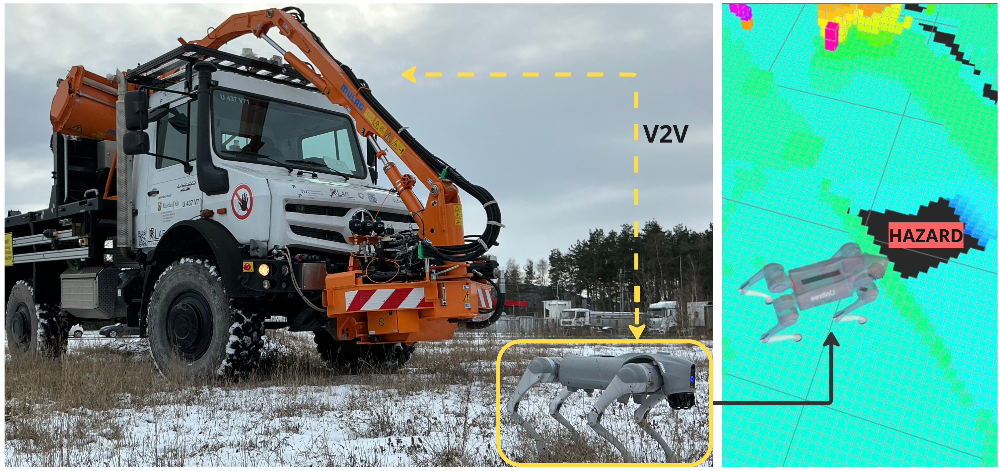

Question 1
Transient local observations are mapped to compact environmental entries with confidence and timestamps.
A cooperative short-term/long-term memory for autonomous robots that shares environmental knowledge and revises it when evidence changes.

The problem
A robot can miss an obstacle because of occlusion, noise, or a temporary sensor failure.
At the same time, a previously observed obstacle may have genuinely been removed.
The memory must therefore remain stable under short-lived errors while adapting to persistent environmental change.
Research Questions
Transient local observations are mapped to compact environmental entries with confidence and timestamps.
Repeated evidence accumulates in STM and reliable knowledge is promoted to persistent LTM.
An LTM entry can reach another robot before the corresponding area enters its own sensor range.
Evaluation
RQ1 · Construction
STM–LTM is compared with current perception and last-observation memory under controlled observation errors.
RQ1 · Cooperation
Information is transferred from a scout robot to a receiving robot before local perception becomes available.
RQ2 · Revision
Temporary contradictions and genuine environmental changes are evaluated separately.
Compare current perception, simple memory, and STM–LTM memory.
Measure how much earlier a receiving robot gains environmental knowledge.
Separate temporary contradictions from persistent environmental change.
Summary table
| Method | Macro-F1 | Availability | Time gain | False overwrite |
|---|---|---|---|---|
| Current perception | — | — | — | — |
| Last-observation memory | — | — | — | — |
| STM–LTM | — | — | — | — |
| Cooperative STM–LTM | — | — | — | — |
Cite this work
To Be Announced When Accepted
@inproceedings{To Be Announced When Accepted,
title = { To Be Announced When Accepted },
author = { To Be Announced When Accepted },
booktitle = { To Be Announced When Accepted },
year = { To Be Announced When Accepted }
} Catharina Helten
Catharina Helten